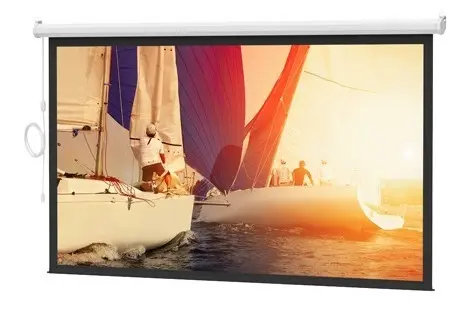

Бюджетные серии
К проекционным экранам эконом-класса относятся недорогие решения для переговорных комнат, небольших залов или образовательных учреждений. Высококачественное белое матовое полотно позволяет получать яркое и четкое изображение при использовании широкого диапазона проекторов. Максимальная ширина экрана может составлять 4 метра. К бюджетным сериям Da-Lite относятся Model B, Model C, а также моторизованные экраны серии Electrol. В эконом-класс также входят переносные и портативные экраны.